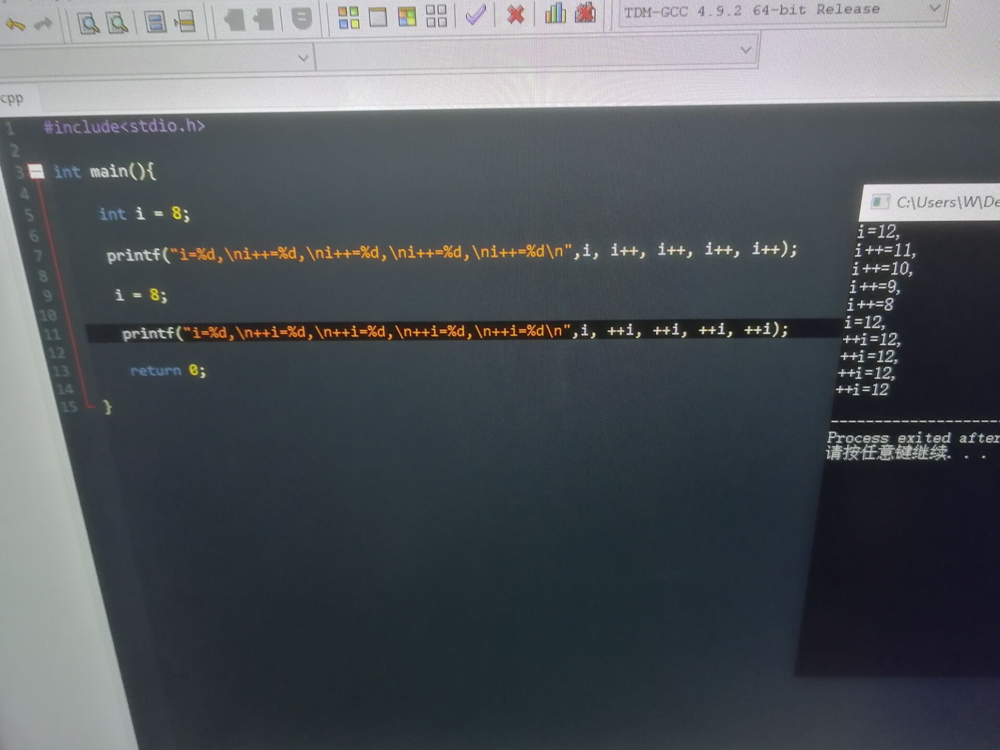
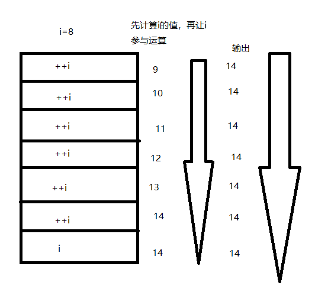
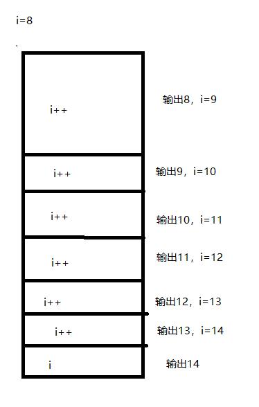

a_pos = a++; //后缀，使用a的值之后，递增a
b_pre = ++b; //前缀，使用b的值之前，递增b
a--和--b同理，不必赘述。这是几乎每个学习过C语言的同学都会知道的，而我在帮助一位“偷懒”的同学解答时，遇到了如下问题。

这位同学将书上本该分开写的printf语句连在了一起写，出现了这样的问题，让我一时难以解答。
直觉告诉我有可能是printf语句的问题，于是我在网上搜了printf语句的详解：https://www.cnblogs.com/Ahair/p/5017050.html
身为菜鸡的我看完以后并没有解答我心中的疑惑，于是继续百度，终于让我在百度百科里找到了这句话让我有些明白了。
身为菜鸡的我本着打破沙锅问到底的精神更深入的去搜索，得到了这篇博客对于printf为何是从右到左压栈的解答：https://blog.csdn.net/jiange_zh/article/details/47381597
这样一来i++的输出结果反过来的问题似乎得到了解答，可是为啥++i的结果是一排12又让人陷入了困惑。
身为懒癌的我放弃了挣扎，询问了虫子师傅和黄兄，得到了如下解答，深感大佬的牛逼。
C语言在处理前置和后置时的方式不同：
在处理后置时：是将值放入临时量中，在输出时直接从临时量中取值


至此，解答完毕。